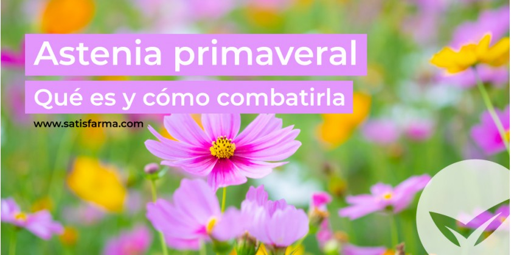
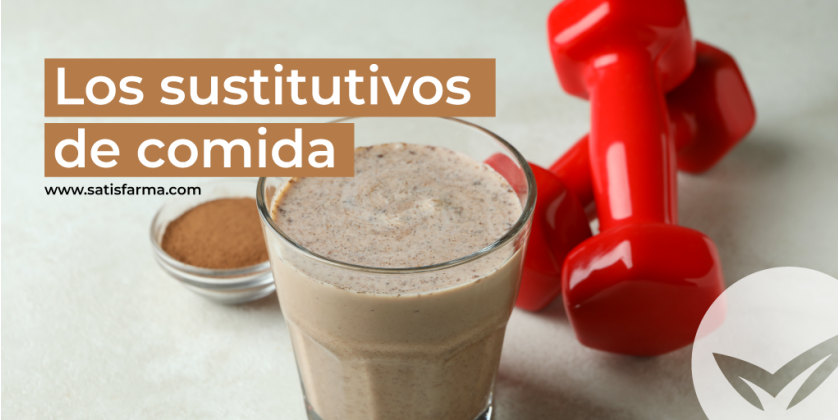
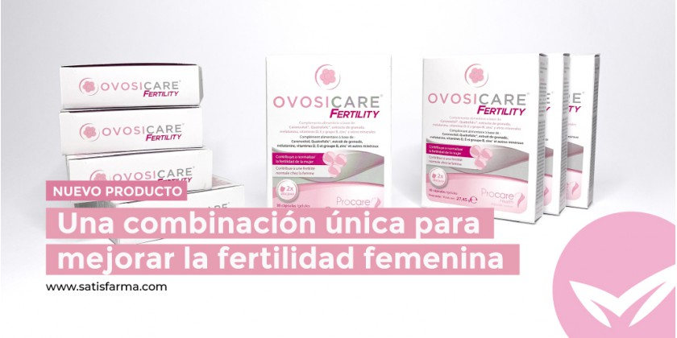
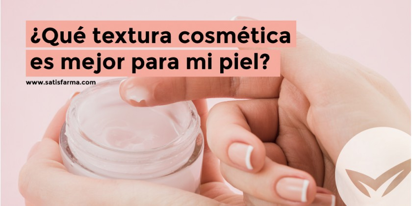

Noticias¶
Aquí puedes encontrtar las últimas noticias en salud.
La Astenia Primaveral¶

¿Te habías planteado siquiera que la primavera pudiera sentarte mal? Llega el buen tiempo y eso te gusta pero muy lejos de sentirte con ganas de todo, tu cuerpo se siente cansado y tu estado de ánimo es más bien bajo. Existe un cuadro patológico considerado un trastorno adaptativo que se relaciona con la llegada de la primavera y que, de un modo u otro, afecta a gran parte de la población, le llaman ASTENIA PRIMAVERAL.
Los sustitutivos de comida¶

Vamos a poner palabras a aquellas dudas más comunes en relación a los sustitutivos alimenticios, cómo hacer una buena introducción de los sustitutivos a nuestras dietas, cuál es la fórmula adecuada de un sustitutivo y qué puede suponer un uso indebido de estos. Cuando alguien toma la decisión de empezar a perder peso, automáticamente se abre un amplio abanico de posibilidades, todo tipo de dietas y ejercicios que prometen resultados rápidos.
PEA: Un tratamiento natural para el dolor crónico¶
¿Existe un tratamiento que ayude a las personas con dolor crónico a sobrellevar su día a día, y que además sea natural? Si, la respuesta es la PEA. Su función es mediar y regular la actividad de ciertas células inflamatorias, llamadas mastocitos, y también actúa reduciendo el dolor, la inflamación y la neuroinflamación debido a su actividad en diversos receptores celulares.
Dermocosmética para embarazadas¶
Vamos a ver cuáles son las claves para combatir los problemas de piel más habituales durante el embarazo y a descubrir qué productos no van a ser perjudiciales para nuestro bebé sin dejar de cuidar la piel de la futura mamá.
Una combinación única para mejorar la fertilidad femenina¶

Hoy queremos hablar del lanzamiento de un nuevo producto, Ovosicare Fertility, el cual ha sido especialmente elaborado para mejorar la fertilidad de las mujeres. Ovosicare Fertility es un complemento alimenticio que está diseñado específicamente para cubrir de forma natural todas las necesidades diarias nutritivas en todas aquellas mujeres que se encuentran en edad fértil y que quieren ser madres.
Cómo podemos cuidar nuestro corazón¶
Las enfermedades cardiovasculares son unas de las principales causas de muerte a nivel global, pero podemos prevenirlas. Muchas de ellas son como consecuencia de ciertos factores nocivos para nuestra salud como pueden ser el alcohol, la diabetes, el tabaquismo o la obesidad. Todas estas causas son prevenibles y se pueden modificar siguiendo los siguientes consejos que te proponemos a continuación.
¿Qué textura cosmética es mejor para mi piel?¶

En la industria cosmética podemos encontrar tantas cremas y texturas como tipos de piel existen. Por este preciso motivo es muy importante saber las características de los productos para determinar si realmente sirven para nuestro tipo concreto de piel.
MANIFIESTO SATISTEAM¶
Aprovechando que ha pasado black friday y hoy es cyber Monday, y para negarnos ante la mala imagen que se ganan, sobretodo durante estos días, las compras online, el equipo de Satisfarma queremos reclamar nuestra oportunidad de ser un delivery de proximidad, ¿crees que es posible? te contamos nuestros “porque” dentro de este blog.